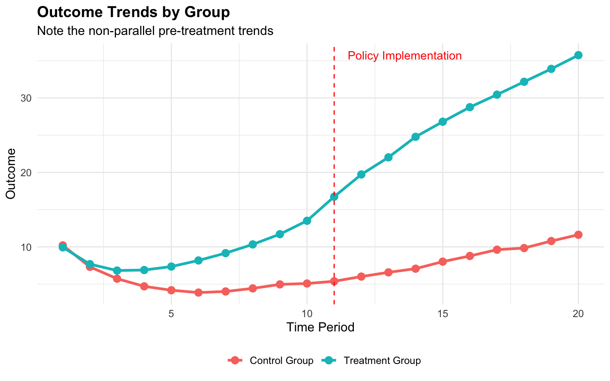
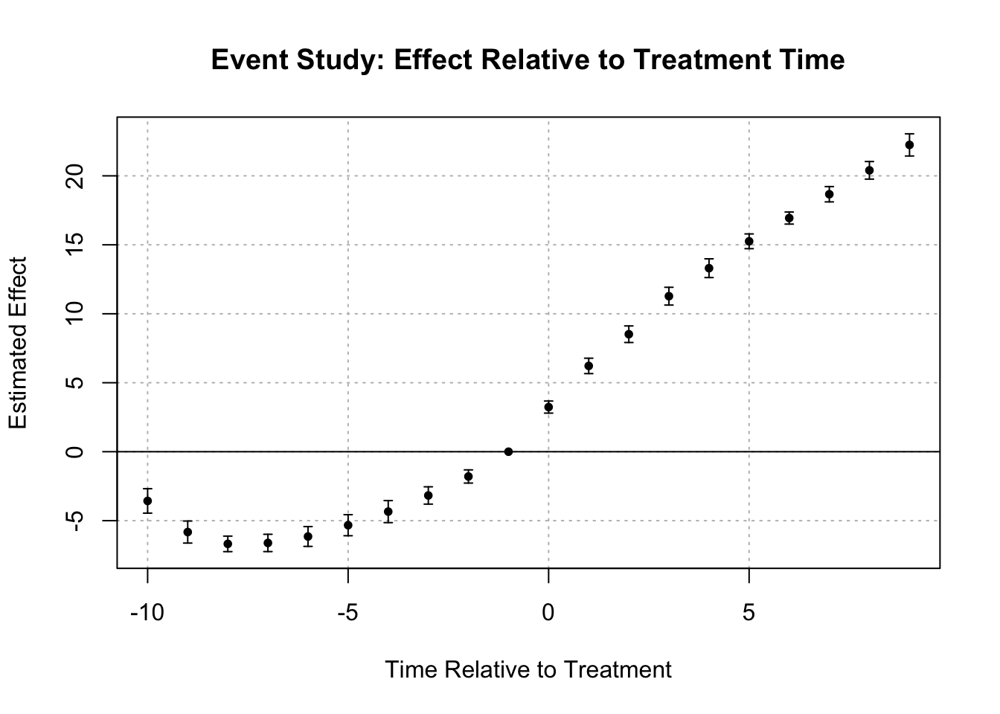

library(tidyverse)
library(lfe) # For fixed effects models
library(ggplot2)
library(kableExtra)
library(fixest)
# Set seed for reproducibility
set.seed(123)
# Simulation parameters
n_states <- 50 # 25 treatment, 25 control
n_periods <- 20 # 10 pre-treatment, 10 post-treatment
treatment_period <- 11 # Treatment starts at period 11
true_effect <- 2 # True policy effect
# Generate panel data
simulate_data <- function() {
# Create empty dataframe
df <- expand.grid(
state = 1:n_states,
time = 1:n_periods
)
# Assign treatment (first half of states)
df$treated <- ifelse(df$state <= n_states/2, 1, 0)
# Generate treatment indicator (post-treatment for treated states)
df$treatment <- ifelse(df$treated == 1 & df$time >= treatment_period, 1, 0)
# Different trends for treatment and control groups
df$state_trend <- ifelse(df$treated == 1, 0.5, 0.2) # Non-parallel trends
# Generate outcomes
# First, create a starting value for each state
state_initial <- tibble(
state = 1:n_states,
initial_value = 10 + rnorm(n_states, 0, 2)
)
df <- left_join(df, state_initial, by = "state")
# Generate outcomes with AR(1) process and non-parallel trends
# This requires multiple passes
df$outcome <- df$initial_value # Initialize
for (t in 2:n_periods) {
# Get previous period data
prev_data <- df %>%
filter(time == t-1) %>%
select(state, prev_outcome = outcome)
# Update current period
df <- df %>%
left_join(prev_data, by = "state") %>%
mutate(
outcome = ifelse(
time == t,
0.7 * prev_outcome + state_trend * time + treatment * true_effect + rnorm(n(), 0, 1),
outcome
)
) %>%
select(-prev_outcome)
}
return(df)
}
# Generate data
policy_data <- simulate_data()Beyond DiD: Autoregressive Models for Policy Evaluation When Parallel Trends Fail
causal inference
policy evaluation
methodology
This post demonstrates how autoregressive models can overcome the limitations of difference-in-differences analysis when evaluating health policies with non-parallel pre-treatment trends, providing researchers with practical tools to improve causal inference in observational studies.
Introduction
The difference-in-differences (DiD) framework has become a cornerstone of policy evaluation in health services research and beyond. When a policy change affects some regions or groups but not others, DiD offers a compelling approach to estimate causal effects. However, the validity of DiD hinges critically on the parallel trends assumption: that treatment and control groups would have followed parallel trajectories in the absence of intervention.
What happens when this assumption fails? In this post, we explore autoregressive models as a robust alternative for policy evaluation when parallel trends are violated. We’ll walk through:
- Why parallel trends matter for DiD
- When and how they fail in real-world applications
- How autoregressive models can help
- A simulation comparing both approaches
- Practical implementation in R
The Problem with Parallel Trends
The parallel trends assumption is the lynchpin of DiD methodology. It states that in the absence of treatment, the difference between treatment and control groups would have remained constant over time. This allows us to attribute any deviation from this pattern to the causal effect of the intervention.
However, in health policy research, this assumption often fails for several reasons:
- Health outcomes frequently have complex, non-linear trajectories
- Treatment assignment may be related to pre-existing trends (e.g., policies targeting areas with worsening health metrics)
- Anticipation effects may cause behavior changes before policy implementation
- Differential shocks to treatment and control groups before the policy
When parallel trends are violated, traditional DiD estimates become biased, potentially leading to incorrect policy conclusions.
Autoregressive Models as an Alternative
Autoregressive models offer a compelling alternative by explicitly modeling the relationship between past and current outcomes. Rather than assuming parallel trends, they directly account for the dynamic evolution of the outcome variable over time.
The basic form of an autoregressive model for policy evaluation can be expressed as:
\[Y_{it} = \alpha + \rho Y_{i,t-1} + \beta D_{it} + \gamma X_{it} + \delta_i + \lambda_t + \epsilon_{it}\]
Where: - \(Y_{it}\) is the outcome for unit \(i\) at time \(t\) - \(Y_{i,t-1}\) is the lagged outcome (the autoregressive component) - \(D_{it}\) is the treatment indicator - \(X_{it}\) represents time-varying controls - \(\delta_i\) are unit fixed effects - \(\lambda_t\) are time fixed effects - \(\epsilon_{it}\) is the error term
The coefficient \(\beta\) represents the treatment effect.
By including the lagged dependent variable, these models can accommodate different pre-treatment trajectories, making them particularly valuable when parallel trends are suspect.
Simulation: DiD vs. Autoregressive Models
Let’s compare these approaches through simulation. We’ll generate data where the parallel trends assumption is violated and compare the performance of DiD and autoregressive models.
Now let’s visualize the data to confirm we have non-parallel trends:
# Calculate group means by time
group_means <- policy_data %>%
group_by(time, treated) %>%
summarize(mean_outcome = mean(outcome), .groups = "drop") %>%
mutate(group = ifelse(treated == 1, "Treatment Group", "Control Group"))
# Plot trends with intervention line
ggplot(group_means, aes(x = time, y = mean_outcome, color = group, group = group)) +
geom_line(size = 1.2) +
geom_point(size = 3) +
geom_vline(xintercept = treatment_period, linetype = "dashed", color = "red") +
annotate("text", x = treatment_period + 0.5, y = max(group_means$mean_outcome),
label = "Policy Implementation", hjust = 0, color = "red") +
labs(
title = "Outcome Trends by Group",
subtitle = "Note the non-parallel pre-treatment trends",
x = "Time Period",
y = "Outcome",
color = ""
) +
theme_minimal() +
theme(
legend.position = "bottom",
text = element_text(size = 12),
plot.title = element_text(face = "bold")
)
As we can see, the treatment and control groups follow different trajectories even before the policy implementation (vertical dashed line), violating the parallel trends assumption.
Now let’s estimate the treatment effect using both methods:
# 1. Standard DiD model
did_model <- felm(outcome ~ treated + time + treatment | 0 | 0 | state, data = policy_data)
# 2. Autoregressive model
# First, create lagged outcome
policy_data_lagged <- policy_data %>%
arrange(state, time) %>%
group_by(state) %>%
mutate(lag_outcome = lag(outcome)) %>%
ungroup() %>%
filter(!is.na(lag_outcome)) # Drop first period for each state
# Run autoregressive model
ar_model <- felm(outcome ~ lag_outcome + treated + time + treatment | 0 | 0 | state,
data = policy_data_lagged)
# Compare results
results_df <- tibble(
Model = c("True Effect", "DiD Estimate", "Autoregressive"),
Estimate = c(true_effect, coef(did_model)["treatment"], coef(ar_model)["treatment"]),
Bias = c(0, coef(did_model)["treatment"] - true_effect,
coef(ar_model)["treatment"] - true_effect)
)
# Format table
results_df %>%
mutate(
Estimate = round(Estimate, 3),
Bias = round(Bias, 3),
`Percent Bias` = ifelse(Model == "True Effect", "-",
paste0(round(Bias / true_effect * 100, 1), "%"))
) %>%
kable(align = "lrrr", caption = "Comparison of Model Estimates") %>%
kable_styling(bootstrap_options = c("striped", "hover"), full_width = FALSE)| Model | Estimate | Bias | Percent Bias |
|---|---|---|---|
| True Effect | 2.000 | 0.000 | - |
| DiD Estimate | 13.371 | 11.371 | 568.6% |
| Autoregressive | 3.070 | 1.070 | 53.5% |
Why Autoregressive Models Work
The results demonstrate why autoregressive models often outperform DiD when parallel trends are violated. Here are the key advantages:
Dynamic relationships: By including the lagged dependent variable, autoregressive models directly account for the relationship between past and current outcomes, capturing pre-existing dynamics.
Different pre-treatment trajectories: Instead of assuming parallel trends, autoregressive models can accommodate different trajectories between treatment and control groups.
Controlling for omitted variables: The lagged outcome can serve as a proxy for unobserved time-varying confounders that affect the trajectory of the outcome.
Anticipation effects: These models can better handle situations where units change behavior in anticipation of policy changes.
Model Assumptions and Limitations
While autoregressive models address the parallel trends issue, they come with their own assumptions:
No contemporaneous reverse causality: The policy implementation cannot be simultaneously determined by current outcomes.
Dynamic completeness: The model must include sufficient lags to capture the full dynamics of the process.
Correct functional form: The relationship between past and current values must be correctly specified.
Exogeneity of treatment: The policy implementation should be exogenous after controlling for lagged outcomes.
Nickell bias: In short panels with unit fixed effects, coefficients on the lagged dependent variable can be biased. This may require specialized estimators like Arellano-Bond for correction.
Application to Health Policy Research
The flexibility of autoregressive models makes them particularly valuable for health policy research, where outcomes often have complex dynamics:
- Hospital readmission policies: When evaluating policies to reduce readmissions, hospitals often have different pre-existing trends
- Medicaid expansion: States that expanded Medicaid may have had different health trajectories before expansion
- Prescription drug monitoring programs: States implementing these programs often do so in response to worsening opioid trends
Practical Implementation
To implement autoregressive models for policy evaluation in R:
# Basic autoregressive model
ar_basic <- lm(outcome ~ lag_outcome + treatment, data = policy_data_lagged)
# With fixed effects and time trends
ar_fe <- felm(outcome ~ lag_outcome + treatment | state + time | 0 | state,
data = policy_data_lagged)
# With clustered standard errors
ar_cluster <- felm(outcome ~ lag_outcome + treatment | state + time | 0 | state,
data = policy_data_lagged)
# Custom function to create leads and lags
create_leads_lags <- function(data, id_var = "state", time_var = "time",
treatment_var = "treatment", leads = 3, lags = 5) {
# Ensure data is arranged correctly
data <- data %>% arrange(.data[[id_var]], .data[[time_var]])
# Create lag variables
for (i in 1:lags) {
lag_name <- paste0("lag", i, "_", treatment_var)
data <- data %>%
group_by(.data[[id_var]]) %>%
mutate(!!lag_name := lag(.data[[treatment_var]], n = i)) %>%
ungroup()
}
# Create lead variables
for (i in 1:leads) {
lead_name <- paste0("lead", i, "_", treatment_var)
data <- data %>%
group_by(.data[[id_var]]) %>%
mutate(!!lead_name := lead(.data[[treatment_var]], n = i)) %>%
ungroup()
}
# Create lagged outcome variable for autoregressive component
data <- data %>%
group_by(.data[[id_var]]) %>%
mutate(lag_outcome = lag(.data[["outcome"]], n = 1)) %>%
ungroup()
return(data)
}Testing Model Suitability
Before choosing an autoregressive approach, it’s important to assess whether parallel trends are indeed violated:
# When evaluating policy interventions with dynamic effects, we need to look at both
# pre-treatment effects (to check for anticipation) and post-treatment effects
# (to assess how impacts evolve over time).
# This creates both the leads/lags AND the required lag_outcome variable
policy_data_dynamic <- create_leads_lags(policy_data_lagged,
id_var = "state",
time_var = "time",
treatment_var = "treatment",
leads = 3,
lags = 3)
# Keep only complete cases for this analysis
policy_data_dynamic <- policy_data_dynamic %>%
filter(!is.na(lag_outcome))
# For dynamic effects (leads and lags of treatment)
ar_dynamic <- tryCatch({
felm(outcome ~ lag_outcome + lag1_treatment + lag2_treatment + lag3_treatment +
treatment + lead1_treatment + lead2_treatment + lead3_treatment |
state + time | 0 | state, data = policy_data_dynamic)
}, error = function(e) {
message("Error in dynamic model: ", e$message)
# Simpler fallback model
felm(outcome ~ lag_outcome + treatment | state + time | 0 | state,
data = policy_data_dynamic)
})
# Print summary
summary(ar_dynamic)
Call:
felm(formula = outcome ~ lag_outcome + lag1_treatment + lag2_treatment + lag3_treatment + treatment + lead1_treatment + lead2_treatment + lead3_treatment | state + time | 0 | state, data = policy_data_dynamic)
Residuals:
Min 1Q Median 3Q Max
-2.93016 -0.65451 0.01728 0.62855 3.12924
Coefficients:
Estimate Cluster s.e. t value Pr(>|t|)
lag_outcome 0.58767 0.03071 19.136 < 2e-16 ***
lag1_treatment 0.62796 0.34698 1.810 0.076466 .
lag2_treatment 0.34763 0.44517 0.781 0.438612
lag3_treatment 1.37402 0.32756 4.195 0.000114 ***
treatment 1.94893 0.37674 5.173 4.26e-06 ***
lead1_treatment 1.18728 0.41469 2.863 0.006158 **
lead2_treatment 0.39214 0.35710 1.098 0.277510
lead3_treatment 0.56319 0.37265 1.511 0.137134
---
Signif. codes: 0 '***' 0.001 '**' 0.01 '*' 0.05 '.' 0.1 ' ' 1
Residual standard error: 1.015 on 580 degrees of freedom
(250 observations deleted due to missingness)
Multiple R-squared(full model): 0.9867 Adjusted R-squared: 0.9851
Multiple R-squared(proj model): 0.9152 Adjusted R-squared: 0.9051
F-statistic(full model, *iid*):624.1 on 69 and 580 DF, p-value: < 2.2e-16
F-statistic(proj model): 625.9 on 8 and 49 DF, p-value: < 2.2e-16 # Load necessary packages
library(fixest) # For event study plots
# 1. Visual inspection with leads and lags plot
# Create relative time variable (time to treatment)
policy_data <- policy_data %>%
mutate(rel_time = ifelse(treated == 1, time - treatment_period, NA))
# Use fixest for event study
event_study <- feols(outcome ~ i(rel_time, ref = -1) + i(time) | state,
data = policy_data %>% filter(treated == 1, !is.na(rel_time)))
# Plot the event study coefficients
iplot(event_study, main = "Event Study: Effect Relative to Treatment Time",
xlab = "Time Relative to Treatment", ylab = "Estimated Effect")
# Plot coefficients for visual inspection of pre-trends
# 2. Statistical test for pre-trends
pre_data <- policy_data %>% filter(time < treatment_period)
summary(felm(outcome ~ treated * time | state | 0 | state, data = pre_data))
Call:
felm(formula = outcome ~ treated * time | state | 0 | state, data = pre_data)
Residuals:
Min 1Q Median 3Q Max
-3.7575 -1.3608 -0.2419 1.1661 6.3767
Coefficients:
Estimate Cluster s.e. t value Pr(>|t|)
treated NaN 0.00000 NaN NaN
time -0.43327 0.05084 -8.523 3.06e-11 ***
treated:time 0.95150 0.06717 14.167 < 2e-16 ***
---
Signif. codes: 0 '***' 0.001 '**' 0.01 '*' 0.05 '.' 0.1 ' ' 1
Residual standard error: 1.91 on 448 degrees of freedom
Multiple R-squared(full model): 0.6632 Adjusted R-squared: 0.6249
Multiple R-squared(proj model): 0.3654 Adjusted R-squared: 0.2932
F-statistic(full model, *iid*): 17.3 on 51 and 448 DF, p-value: < 2.2e-16
F-statistic(proj model): 70.67 on 3 and 49 DF, p-value: < 2.2e-16 # If interaction is significant, parallel trends is likely violatedConclusion
When evaluating policy interventions, the reliability of our estimates hinges on the validity of model assumptions. While DiD remains a powerful tool when its assumptions hold, autoregressive models offer a valuable alternative when parallel trends are violated.
By explicitly modeling the dynamic relationship between past and current outcomes, these models can deliver more accurate causal estimates in complex policy environments. Rather than viewing them as competitors, researchers should understand the strengths and limitations of both approaches, selecting the appropriate method based on the specific context and data characteristics.
In health policy research, where outcomes often follow complex trajectories and policy implementations are frequently endogenous to pre-existing trends, the autoregressive approach offers a flexible framework that can accommodate these realities while still enabling credible causal inference.